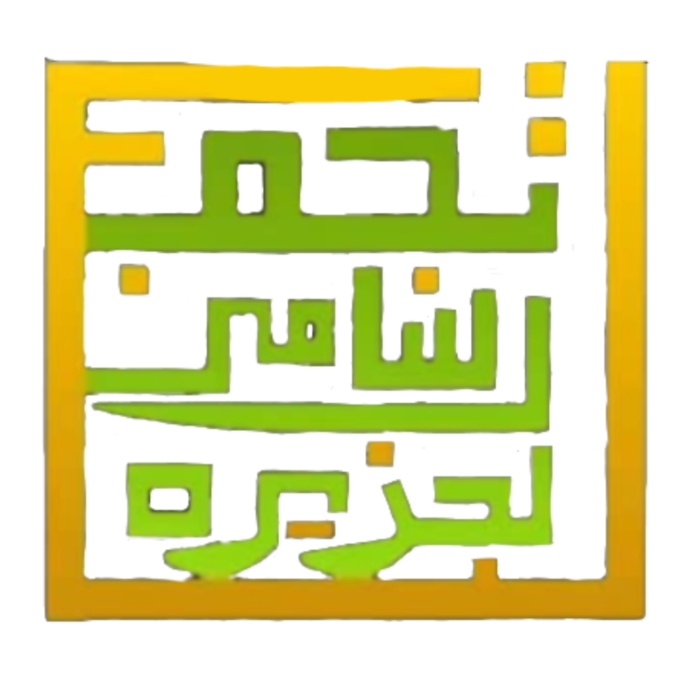
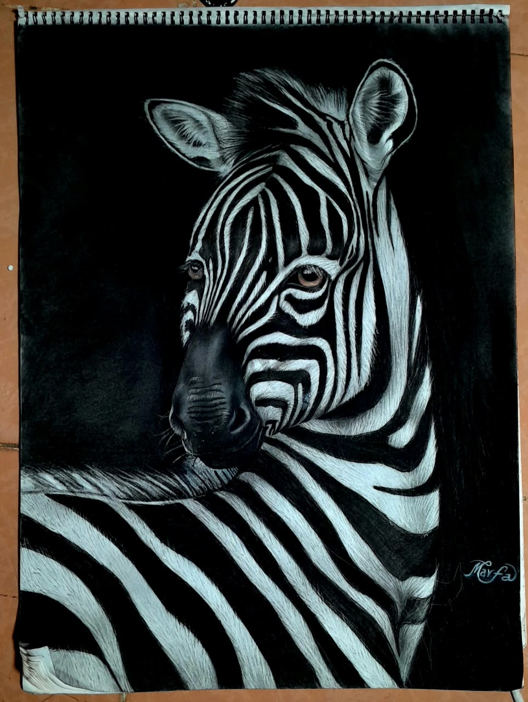
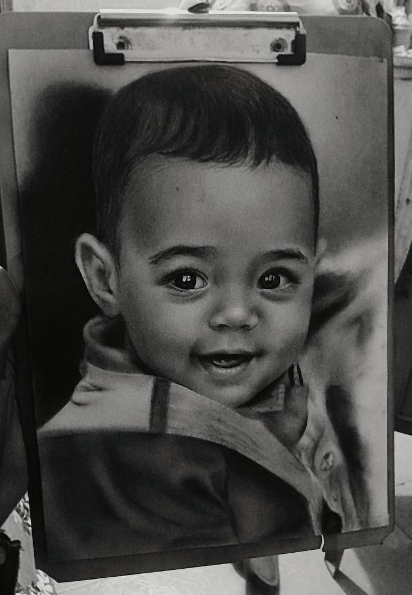
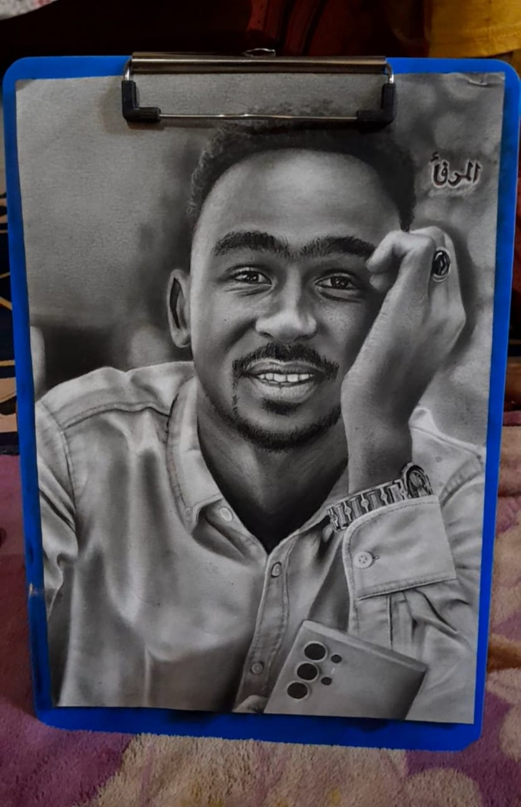
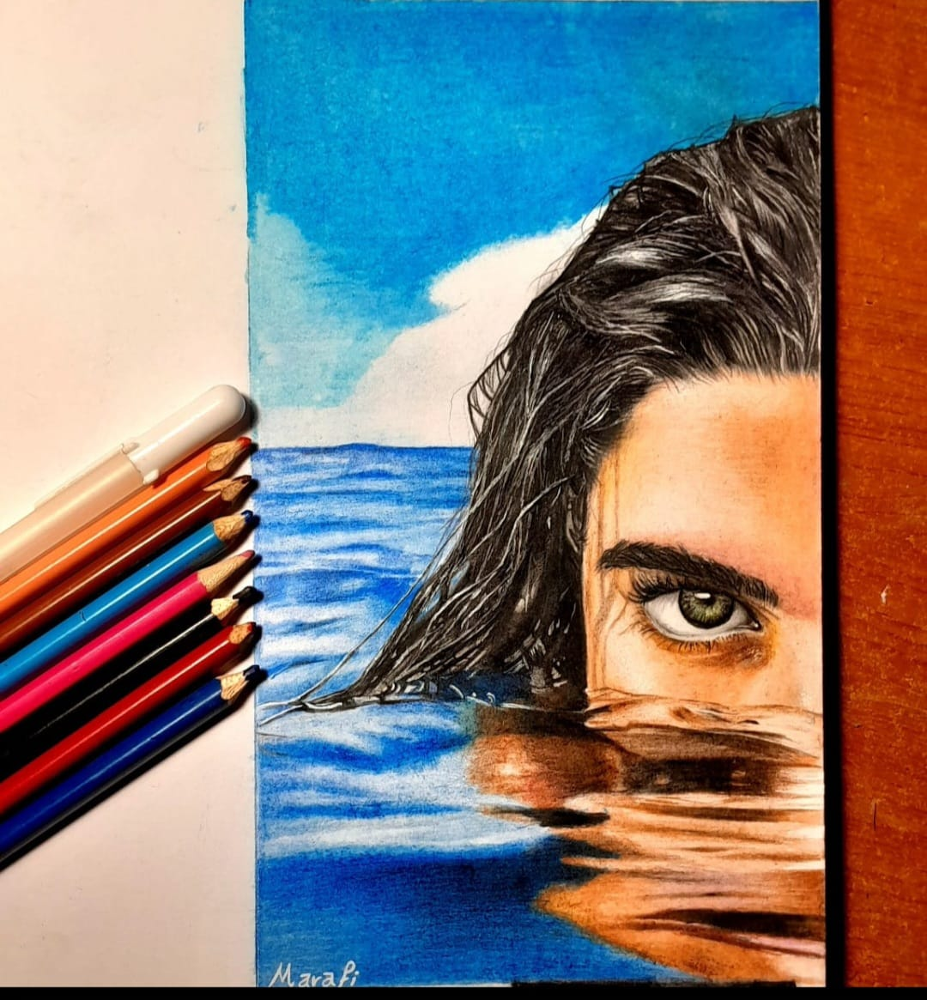
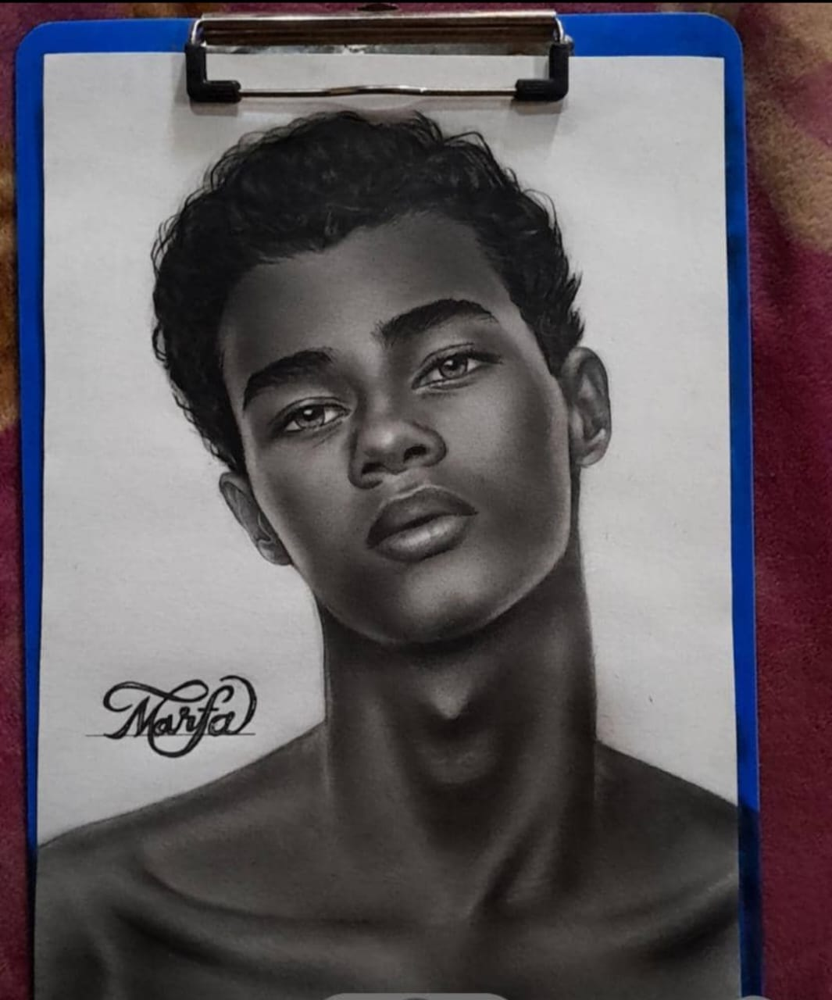
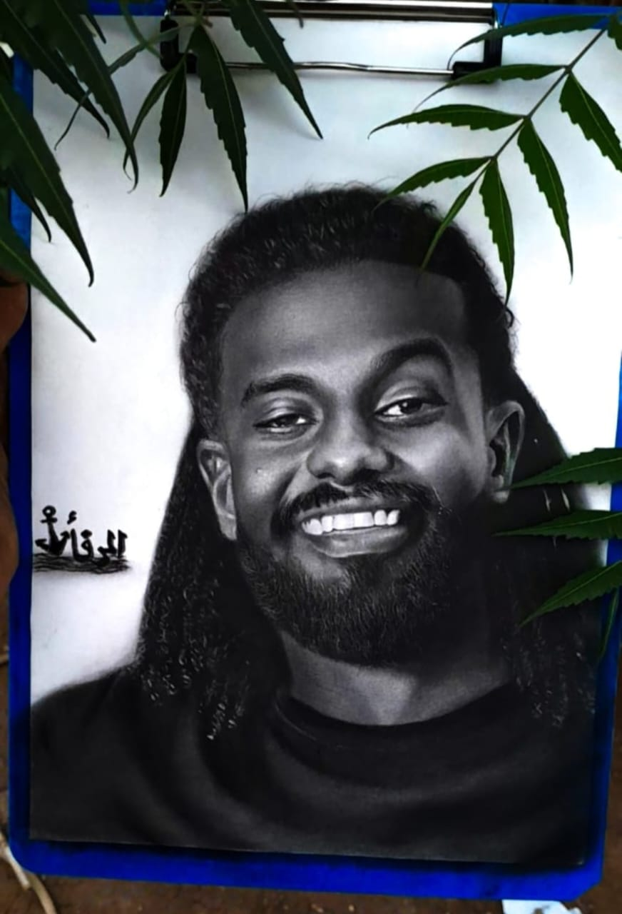
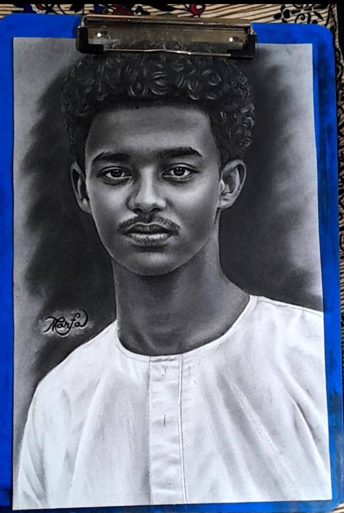

البورتريه والحيوانات
المستوى الفني S

اللقب الشخصيمرفأ - نوڤا
أميل لرسم الحياة والطبيعة والصور الشخصية، وأهتم بتحويل الصور العادية إلى صورة عميقة بطريقة مختلفة مليئة بالإبداع. طالبة تسعى في سبيل العلم.
تخصص الرسم المفضلبورتريه
خامة الرسم المفضلةأقلام تلوين خشبية
التصنيف العام S؛ مستويات التصنيفات التفصيلية موثقة لكل مسار فني.
المستوى الفني S
المستوى الفني A
المستوى الفني B
لم يُحدد المستوى بعد

بورتريه حيوان الحمار الوحشي بتباين قوي بين الضوء والظل، يبرز إيقاع الخطوط وتفاصيل النظرة.

بورتريه لطفل بابتسامة هادئة، تلتقط اللوحة براءة اللحظة ودفء التعبير في ملامح الوجه.

بورتريه لرجل يستند إلى يده، مع عناية واضحة بتفاصيل الوجه والملامح والظلال.

بورتريه ملون يزاوج بين ملامح الوجه وحركة الماء، وتظهر فيه أقلام التلوين جزءًا من التكوين.

بورتريه شبابي بالأبيض والأسود، يعتمد على التدرج الناعم لإظهار حجم الوجه وهدوء التعبير.

بورتريه لرجل مبتسم تحيط به أوراق نباتية، في مشهد يجمع دفء الشخصية وحضور الطبيعة.

بورتريه لرجل بملابس بيضاء، بخلفية داكنة تركز العين على الملامح وتمنح العمل حضورًا هادئًا.